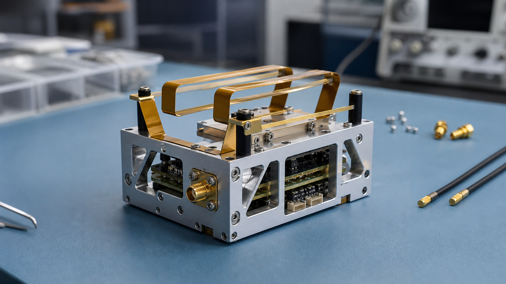

アンテナ
展開機構、RF接続、衛星筐体への搭載性を意識した小型衛星向けアンテナ。
Service / サービス概要
九州工業大学での超小型人工衛星の開発実績を元に、超小型人工衛星のミッション検討から衛星設計・製造、試験、運用まで一貫してサポートいたします。
既に、次世代気象インフラ構築事業者向けに6Uサイズの気象観測衛星や研究機関向けの天文観測衛星の開発に向けた取り組みが開始しております。

小型衛星を開発する事業者向けに、小型衛星用製品の開発・販売事業を展開しております。下記製品以外にも、小型衛星向けアンテナやオンボードコンピュータ、電源モジュール等を販売しております。少しでもご興味のある方は、ぜひお問い合わせよりご連絡ください。
※今後データシートやカタログ等を公開予定です。

展開機構、RF接続、衛星筐体への搭載性を意識した小型衛星向けアンテナ。

人工衛星の制御とデータ処理を担う、堅牢なOBCモジュール。

発電、蓄電、負荷供給を管理する小型衛星向け電源系モジュール。
衛星開発を成功に導くためには、専門的な設計・解析力と確実な実行支援が不可欠です。当社では、ミッション設計から各種申請、環境試験に至るまで、プロジェクトを着実に前進させるプロフェッショナルサービスを提供しております。
※下記以外のご支援内容についても対応可能です。お気軽にお問い合わせください。
Satellite / 超小型人工衛星

Kitakyushu Manufacturing
北九州のものづくりの基盤に、人工衛星開発で求められる堅牢性、構造、熱、通信の検証を重ね、研究成果を運用可能なプロダクトへ近づけます。